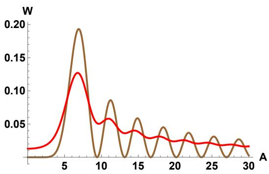
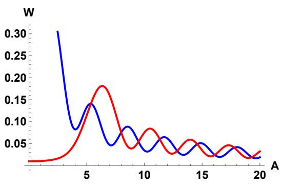

物理图像
考虑一个含时二能级系统：两个”裸”能级的能量差（失谐 ）随时间线性变化，而隧穿耦合把它们杂化成一对瞬时本征态，能级在 处出现最小间隔——避免交叉（avoided crossing）。当系统从远离反交叉的一侧出发向另一侧演化时，有两种极限行为：
- 绝热极限（扫速很慢）：系统始终跟随同一条瞬时本征能级，落到反交叉另一侧时，态在裸基下已经”换了身份”（例如从左点电荷态变成右点电荷态）；
- 突发极限（扫速很快）：系统来不及响应，停留在原来的裸态上，从瞬时本征态的角度看相当于从基态跳到了激发态。
介于两者之间时，系统在反交叉处以概率 发生非绝热跃迁——这就是 Landau–Zener 跃迁（Landau–Zener transition）。该问题由 Landau、Zener、Stückelberg、Majorana 在 1932 年前后各自独立解决，因此周期驱动下的多次穿越版本常合称 LZSM 干涉（见LZSM 干涉）。单次跃迁最形象的类比是光学分束器：入射态在反交叉处被分裂成沿两条瞬时本征能级传播的两个分量，“反射率”就是 。
理论模型
二能级哈密顿量与避免交叉
在裸基（如双量子点的左右电荷态 、）下，模型哈密顿量为
其中 是失谐， 是两个裸态间的耦合矩阵元。 由体系自身性质决定， 是外加的含时控制参量。瞬时本征值为
在 处取最小间隔 ，即反交叉能隙。不同文献的约定可能相差因子 2——有些作者把哈密顿量写成 ，此时能隙为 ——代公式前必须核对所用约定下的 究竟是非对角元还是能隙。
Landau–Zener 公式与绝热参数
设失谐以恒定速率扫过反交叉，定义 （弱耦合极限下即 ）。系统从 的瞬时本征态出发，演化到 后仍停留在原透热支（即发生非绝热跃迁）的概率为 Landau–Zener 公式
其中 称为绝热参数（adiabaticity parameter），只依赖能隙与扫速之比。两个极限清晰可见：（）时 ，完全绝热跟随；（）时 ，完全留在裸态。慢扫或大能隙趋向绝热，快扫或小能隙趋向非绝热。
推导梗概：把含时薛定谔方程写到瞬时（绝热）基下，对角项给出动力学相位，非对角项正比于 驱动两条绝热支之间的跃迁；对线性扫描 ，方程可化为抛物柱面函数（Weber 函数）方程，连接 的渐近形式（Landau 的办法是沿复平面围道积分）即得上述指数律。该结果对从 扫到 的理想线性扫描是精确的；实验中的有限扫描区间与脉冲波形则靠绝热–脉冲模型处理。
绝热–脉冲模型与跃迁矩阵
绝热–脉冲模型（adiabatic-impulse model）把演化分成两段：远离反交叉处能级变化相对平缓，演化近似绝热；反交叉附近变化剧烈，跃迁”突然”发生。反交叉处的一次非绝热事件由幺正矩阵描述：
其中混合角与相位为
是与斯托克斯现象（Stokes phenomenon）相关的斯托克斯相位（Stokes phase）：
为伽玛函数。极限行为：绝热极限 时 、；突发极限 时 、。在布洛赫球上，，即一次跃迁等价于一次绕 轴的旋转加上两个绕 轴的相位校正。
两次穿越：从跃迁到干涉
若系统两次经过反交叉（例如脉冲扫过去又回来），两次跃迁之间沿不同瞬时本征能级演化会积累相位差
可形象理解为演化时间内两条能级曲线之间包围的面积。总演化 ，最终测得的跃迁概率为
总相位 称为 Stückelberg 相位：当 时 取极值 ，当 时 为零，形成周期性干涉条纹。这与 Mach–Zehnder 干涉仪完全同构：反交叉是分束器，绝热演化是两条光程不同的臂。条纹可见度 在 时达到最大，也提供了从干涉幅度反推单次跃迁概率的实验手段。这部分的完整展开见LZSM 干涉。
量子点体系中的实现
电荷量子比特：脉冲扫过反交叉
在电荷量子比特中，裸基是双量子点中单电子的左右局域态 、，失谐由栅压脉冲控制。对高斯型尖锐脉冲（幅度 、上升/下降沿 ，初始失谐 ，扫速 ），两次穿越之间积累的相位在 的尖脉冲极限下简化为
生成性（相长）干涉条纹出现在 处，即失谐位置
整个”扫过–积累相位–扫回”过程在布洛赫球上合成一次旋转，总转角为
由于脉冲幅度 、边沿时间 、静态失谐 与能隙 全部人为可控，单次 LZSM 序列可以实现布洛赫球上任意角度的旋转——曹刚等人 2013 年在 GaAs 双量子点电荷比特上正是用这一方案完成了超快普适单比特操控（论文第 5 章）。与驻留反交叉点的拉比振荡相比，LZ 方案不依赖脉冲在 处精确定时，对波形失真更鲁棒；代价是每个逻辑门由多次穿越拼接，总时长未必更短。
单态–三重态比特的 – 反交叉
在单态–三重态量子比特中，核场横向分量把 – 交叉变成反交叉，同样可用 LZ 过程做相干控制：单次以速率 穿过时停留在 的振幅满足 （ 为反交叉能隙）；在 的理想工作点，每次穿越等效于一个 Hadamard 门，中间的相位积累等效于绕 轴旋转，二者合成普适单比特操作。同一反交叉的”绝热穿过、非绝热返回”循环每圈翻转一个核自旋，还被用来实现动态核自旋极化（DNP），在两点间建立稳定的磁场梯度。
周期微波驱动与腔探测
对失谐施加单色纵向驱动 ，系统每个周期两次穿过反交叉，多次 LZ 跃迁与相位积累叠加出稳态干涉图样；此时绝热参数写作 （ 为能隙），并可自然纳入Floquet 理论描述。强微波驱动下，这类过程与光子辅助隧穿（PAT）共享同一实验条件：在双量子点 PAT 实验（15 GHz 微波）中发现，峰高随功率在某些功率点几乎归零、峰位等间距、高功率下出现更多阶数的峰——这三个特征表明观察到的已是 LZS 干涉而非单光子 PAT 图像。在量子点–微波谐振腔杂化系统中，LZSM 干涉还可由腔透射/反射信号读出（色散读出），并出现腔光子辅助的 LZSM 与”双共振”条件 下干涉条纹劈裂成月牙形孔洞等更丰富的结构（论文第 6 章）。
精确跃迁率公式：修正旧近似

跃迁率 W 随驱动幅度 A 的精确行为（以 为单位）：极大/极小值的位置与高度由显式公式给出——旧近似在这些特征点附近偏离精确结果。图源：arXiv:2310.13058，Fig. 1。

大振幅极限下跃迁率的渐近行为：精确公式给出的包络与特征结构——实验拟合应采用精确形式以避免参数系统偏差。图源：arXiv:2310.13058，Fig. 2。
参数与量级
| 量 | 典型值 | 体系 / 来源 |
|---|---|---|
| 反交叉能隙 | eV（ GHz） | GaAs 双量子点电荷比特 |
| 环境温度 | mK（稀释制冷机） | 同上实验的 Triton 400 系统 |
| 脉冲源 | Agilent 81134A 码型发生器，经偏置 T 与直流叠加 | 同上 |
| 绝热参数 | 绝热、 突发 | LZ 公式的无量纲控制量 |
| 微波驱动频率 | GHz，功率至 dBm | 双量子点 PAT/LZS 实验 |
| – LZS 工作磁场 | 数十至上百 mT（如 mT） | GaAs 自旋比特 |
| 腔探测 LZSM | GHz， GHz | 双量子点–高阻抗腔 |
实验特征与测量
干涉条纹：固定脉冲波形扫描静态失谐 ，电荷占据概率随 周期性振荡，生成性条纹的位置 随阶数 呈平方根压缩，是 LZS 干涉区别于普通拉比振荡的指纹；条纹位置与理论预言定量吻合（论文图 5.4）。
从可见度反推 ：理想情形下条纹可见度 ，由此可反推单次跃迁概率并研究它随扫速的依赖。进一步把受控的 与 Kibble–Zurek 机制中拓扑缺陷密度对淬火速率的依赖一一对应，在电荷比特上完成了对该非平衡相变预言的量子模拟：淬火越慢缺陷越少，实验与理论曲线定量吻合。
读出方式：电荷比特中，末态 / 直接映射为电荷分布，由QPC 电荷传感器读出；自旋比特中需先经泡利自旋阻塞做自旋–电荷转换（见单态–三重态量子比特）；腔杂化系统中则由谐振腔透射幅值 成像整个干涉相图。
与其他概念的关系
- 模型哈密顿量与双量子点杂化的两能级描述完全相同，能隙 即隧穿耦合决定的反交叉间隔；工作点位于电荷稳定图的电荷跃迁线上。
- 多次穿越与周期驱动的完整理论见LZSM 干涉；与驻留共振的拉比振荡、相位积累的拉姆齐干涉共同构成二能级系统相干操控的三种基本范式。
- 强微波驱动下与光子辅助隧穿是同一物理的两副面孔；周期驱动情形的系统化处理见Floquet 动力学。
- 在电荷量子比特、单态–三重态量子比特与单自旋量子比特中分别对应失谐反交叉、– 反交叉与自旋翻转避免交叉的扫越操控。
- 条纹对比度受电荷噪声限制；腔读出实现见色散读出与电路量子电动力学。
- 电荷穿梭（“单次转移的保真度理论”一节）：硅双点的多个反交叉既是误差源（零失谐宽反交叉放大自旋翻转）也是资源——三步 LZ 协议借电荷测量投影概率性压制翻转误差。